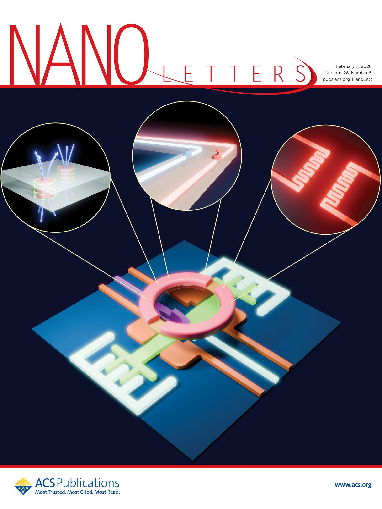
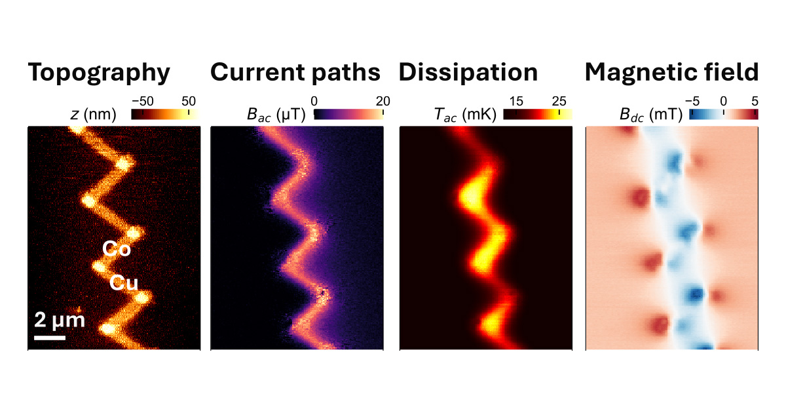
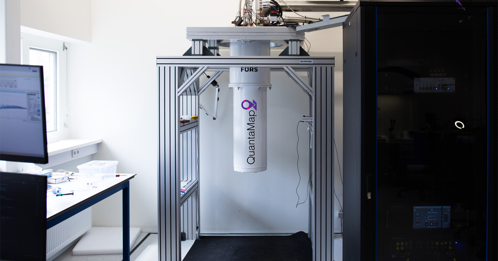

Our first paper demonstrates microscope performance

QuantaMap and Leiden University have demonstrated a new class of microscope for quantum chip inspection. It enables simultaneous nanoscale imaging of heat, magnetism, structure, and electrical behaviour.
As quantum technologies transition from laboratory demonstrations to engineered systems, understanding how quantum chips behave locally inside end-user devices has become a critical bottleneck. This new research, published in Nano Letters, introduces the microscope as a multi-modal imaging platform that moves quantum characterisation out of idealised test conditions and onto actual quantum chips.
A single scan reveals everything
The microscope enables research teams to probe multiple interacting physical phenomena at once, with nanoscale resolution and without disturbing the chip under test.
"In a real quantum device, all physical properties are closely intertwined. If you only study one aspect at a time, you never get ahead. With our microscope, we reveal the relationships between non-equilibrium properties such as current and dissipation, and how those relate to chip structure. This is groundbreaking for our research into the intricate workings of quantum materials." — Matthijs Rog, Leiden University (lead author)

Why this matters for the quantum industry
"Current chip testing relies mainly on electrical characterisation of fully finished chips inside quantum computers — a process that takes weeks per chip and if the performance of some qubits is reduced, it cannot reveal the underlying reason. This new imaging platform addresses that gap. The ability to perform root-cause analysis at the nanoscale makes it possible to identify reasons for failure in quantum chips at any fabrication stage, correlating device performance with local material behaviour, and enabling faster design–fabrication–test feedback loops." — Johannes Jobst, Founder & CEO
As a result of this new technology, fab yield and consistency can be increased, accelerating design optimisation and the transition toward scalable quantum manufacturing.
A new product for the quantum market
QuantaMap is now working to bring these microscope systems to the market for quantum materials research and quantum chip manufacturing. Get in touch if you want to understand your quantum devices and chips.
